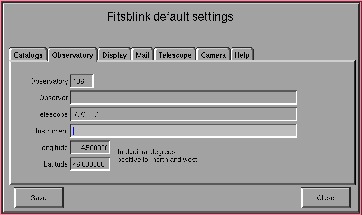
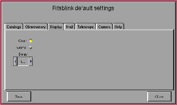

With fitsblink it is possible to measure star positions. To do
this, it is first necessary to detect stars on the image, then to find
a match between the detected stars and stars from a catalog, and to
make a transformation between the two sets of stars.
You start star detection of the currently displayed image by choosing the Detect stars item in the Astrometry menu. Detection of stars has two steps: in the first step sky background levels are determined as a function of position inside the image, and in the second step stars are actually counted and their positions and intensities are determined. A list of these quantities, along with a star ID number, is stored in the computer memory. It is possible to store the results of star detection into a file by choosing the Save star list item. Format of the output file is fairly simple: input file name followed by a list of stars. For each star, there is a star ID, an x coordinate, a y coordinate and a star intensity. If star matching is performed (see subsection 12.2) successfully Save star list also outputs celestial star coordinates expressed in decimal degrees.
Note that the stars which touch the edge of image are not reported.
There are seven parameters concerning star detection that can be changed. You can find them in the Astrometry Options window. You can set Sigma above background value, which is a sensitivity threshold expressed in units of standard deviation of the image background level. Typically you will use values between 3.0 and 5.0. The Minimal accepted intensity is a threshold value expressed in pixel intensity units. A star is not detected if its total intensity is less than the minimal accepted intensity. This parameter is less important (and a bit redundant) and you can keep it close to zero. The Minimal star size in pixels is mostly used to prevent detection of hot pixels as stars. Normally you will keep this value equal 2.
In certain applications it may be desired that the stars lying close to the image edge are not detected. This can be handled by the Insensitive edge parameter. It defines the number of pixels from each of the image edges where the stars are not reported. Finally, the Background grid size determines the size of grid elements inside which background values are determined. This value should not be too big, otherwise gradients in background level may not be well detected. Also, it should not be too small or background will be affected by bright stars and other objects more than you want. Values between 30 and 50 should be fine for most cases.
From version 2.2 on, fitsblink can also use the aperture
astrometry and photometry. This is also the default setting. Star
coordinates are determined as a centroid of values inside a small
circle. To determine the star intensity, an average of pixel values
between the small circle and a larger circle is calculated and used as
a background value. This is then multiplied by the number of pixels
in the smaller circle which have values above the threshold and
subtracted from the total signal inside the smaller circle to get the
star intensity. For the astrometry of comets you should always use
the aperture astrometry because the other method may yield wrong
results due to asymetric coma. For large values (in comparison to
star sizes) of the inner circle the aperture astrometry becomes
practically identical to the alternative method which only uses pixels
with values above some threshold.
Here are first few lines from the 98kd3r5.dat file.
Input file name: 98kd3r5.fts.gz
0 203.41 425.36 33961.00 222.426891 0.361738 g 03261330 0.10 11.76
1 340.29 487.03 21952.00 222.393445 0.289046 g 03261311 0.10 12.39
2 211.92 187.61 5991.00 222.553634 0.356243 g 03270218 0.35 13.91
3 198.20 369.38 4987.00 222.456765 0.364289 g 03260027 0.08 14.42
4 62.06 97.30 4557.00 222.602409 0.435737 g 03270409 0.07 14.39
5 219.05 256.28 4551.00 222.516988 0.352721 g 03270212 0.21 14.54
6 339.95 424.35 4321.00 222.426869 0.288976
7 251.13 269.00 3627.00 222.510071 0.335679 g 03270167 0.12 14.88
8 332.75 64.77 2982.00 222.618637 0.291364 g 03270098 0.11 15.07
9 254.19 111.81 1924.00 222.593878 0.333415
10 150.39 232.54 1657.00 222.529929 0.389214 g 03270315 0.41 15.38
11 172.09 507.79 1654.00 222.383064 0.378755
In the first line there is the name of the image that was used to
produce the star list. Columns for the following rows have the
following meanings:
g stands for the GSC and
u stands for the USNO SA.
Only first four columns are always present, columns from 5 on appear only if the coordinate transformation between image and catalog coordinates was successfully made and the matching catalog star was found.
Star list can also be imported. Choose Load star list item
and select the wanted file name. Please note that the first line in
the input file is ignored. Fitsblink reads star lists it has
produced, but it should be an easy exercise to convert any star list
to the desired format: you need a star id in the first column, x and
y coordinates in the second and third column and star intensity (not
magnitude) in the fourth column.
After succesfully detecting stars or importing of a star list you can display star coordinates by pointing a cursor to it and pressing the right mouse button.
fitsblink in such a mode. You need a
soft link named starcount (do ln -s fitsblink starcount),
which points to the fitsblink program. If you run
fitsblink using the name starcount, it will perform star
counting on the input image. Command line parameters are:
-l logname name of the log file;
-m gridsize size of the grid element for background determination;
-s threshold intensity threshold expressed in units of
background variation;
-i intensity absolute intensity threshold;
-c starsize minimum star linear size (in pixels).
-b edgesize size of the edge where stars are not detected.
-a switch on aperture astrometry (default).
-g switch off aperture astrometry.
-n innercircle radius of the inner circle for the
aperture astrometry.
-g outercircle radius of the outer circle for the
aperture astrometry.
After the star detection, it is possible to match the detected stars
with stars from a star catalog. This is an operation which can easily
fail if you do something wrong. You should practice on one of the
test images distributed together with the fitsblink program.
Parameters needed for star matching (WCS values) can be either read
from the FITS file header or input manually by choosing the
Edit parameters item from the Astrometry menu. The
pixel size values should be correct within few percent. Also, center
coordinates should not be off by more than half of the field. The
rotation angle usually does not need to be changed because
fitsblink finds (or does not find) a match regardless of image
orientation for square pixels.
To do star matching, you need at least one of the supported star
catalogs. Currently fitsblink reads GSC 1.1 and USNO SA 1.0
catalogs. Both are distributed on CD-ROM and must be purchased
separately. You need to mount the CD-ROM somewhere in the directory
structure of your computer and make sure that you are allowed to read
it. You choose the catalogs and set their paths in a window which
appears after you choose the Catalogs item from the
Astrometry menu (fig. 3).
Alternatively, you can copy these catalogs to your hard disk. In a
case of GSC, it is possible to use a nice feature of the
cfitsio library that it automatically searches for the
file.gz if it doesn't find file. You can compress all
.gsc files and save some disk space. Only file 0001.gsc needs
to be uncompressed.
Matching subroutine uses constellations of stars from star lists extracted from both the CCD image and the catalog. In the initial phase, it only uses a subset of bright stars from both images. For each star in this subset it forms a constellation using the nearest stars from the subset. Then it tries to find a constellation of stars from the catalog which completely or partly matches the reference constellation. Each attempt of matching is given a value which indicates a level of similarity between the reference constellation and the constellation under investigation. The maximum value that can be achieved is n(n+1)/2, where n is the number you type in Number of stars in constellation field of the Astrometry options form. This number is never actually reached because stars from the CCD image never exactly match stars from the catalogue.
If the match is successful, a bilinear transformation between the coordinate system is calculated and results of matching are presented in a window. It is possible to write the newly calculated WCS values directly into the FITS header (see also non-interactive mode). This is only possible for the noncompressed images, because the cfitsio library does not write the compressed images yet.
There may be many reasons why matching between star lists extracted from a CCD image and a catalog fails. They are the following:
fitsblink is
tolerant to small discrepancies of image center coordinates, it can
not search a very wide field around the assumed center coordinates.
Catalog image is extended 30 % in each of four directions, so it
covers 2.56 times the area that CCD image has. Anything outside this
can not be matched.
match
written by Michael Richmond. So, you need to know actual pixel
dimensions rather accurately, to some 1 %. If you poorly know pixel
dimensions, you should recall Astrometry options input form
and enlarge Maximal positional error in pixels value to 20 or
40 pixels. You will get some warnings, but you can ignore them. If
you do this, star matching routine will be more tolerant. If matching
succeeds, you will get the calculated pixel sizes and you should use
these values in the future. However, if you don't know angular pixel
size with better then 10 % accuracy, you really should rethink your
intention to do astrometry.
If you are reasonably sure about the correctness of the star field coordinates as well as the pixel size(s) and you still can not get a match, try the following in Astrometry options form:
Do the above parameter adjustment in the order as described here. As your despair increases, start to combine changes of different parameters until you finally get a match.
catalog which points to fitsblink it is
possible to run fitsblink with a command catalog.
Output file name will be made automatically by stripping off whatever
follows the last ``.'' and replacing it by an extension dat.
Some attention is required here because there are chances that the
output .dat file gets the same name as the input .dat
file. This may not be desired in some cases. A possible solution for
this is to rename the input .dat file.
-l log file name
-b number of bright stars
-a right ascension of the center pixel (in decimal degrees)
-d declination (in decimal degrees)
-w width of a pixel (in arc seconds)
-h height of a pixel (in arc seconds)
-x number of pixels in x direction
-y number of pixels in y direction
-f name of the input star list
-n number of stars in constellation
-m minimal constellation value
-e allowed arror in pixels
-i allowed intensity error (factor)
-r residual in arc-seconds
-c catalog name and path (eg. usno:/cdrom, can be
also gscn: for GSC North or gscs: for GSC South)
-W write newly calculated WCS values into the FITS file header
Here is a command line useful for the example image 98kd3r5.fts.gz:
catalog -f 98kd3r5.dat -a 222.5 -d 0.366 -w 1.92 -h 1.92 \ -c gscn:/cdrom -x 356 -y 541The backslash above means continuation of the command line. Please note again that the center coordinates are specified in DECIMAL degrees. Default values for catalog matching are the same as in the interactive mode. As in the interactive mode, it is not possible to write the WCS values into the header (the -W option) if the image file is compressed.
The report window is used for editing and sending astrometry positions to the MPC. It is shown in fig. 5
Sending astrometry reports to MPC requires certain
format. Fitsblink writes information about the measurement in
this format. Additionally, you have to give some basic information
about you and about the measurement. If this information is present
in the header of the image file or in the .fitsblinkrc file, it
will be inserted in the message if you press the Insert
header button. Otherwise you will have to type this information by
yourself. You can use the Send astrometry report form as a
primitive line editor and add additional information to the file which
will be sent. When you press the Send button and comfirm
your decision, the message is sent to whatever addresses you wrote
into To: and CC: fields. So, be careful with this.
The following default settings can be written into file
$HOME/.fitsblinkrc by fitsblink and then read at the
start-up time.
|  |
|  |